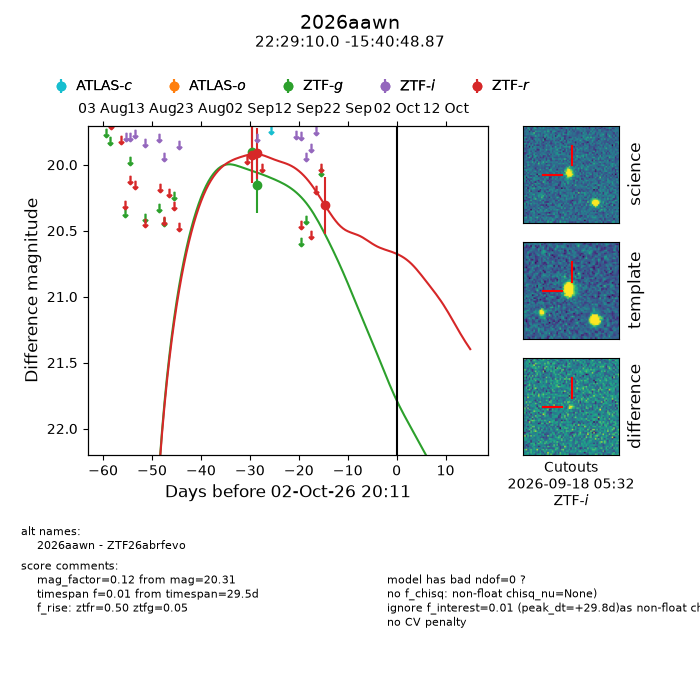
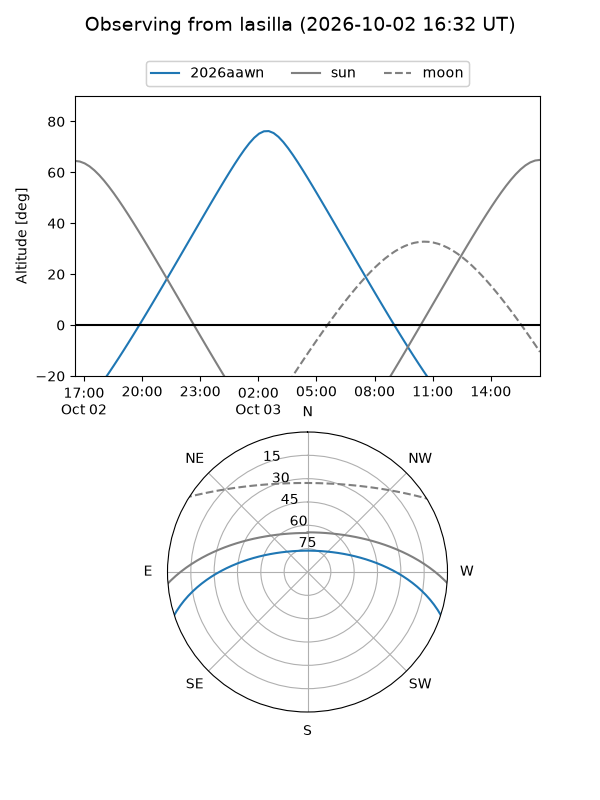
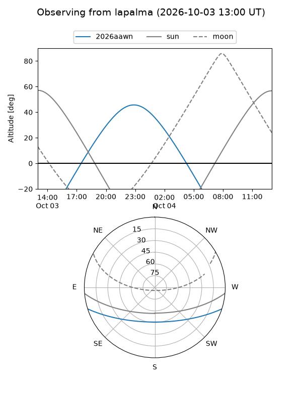
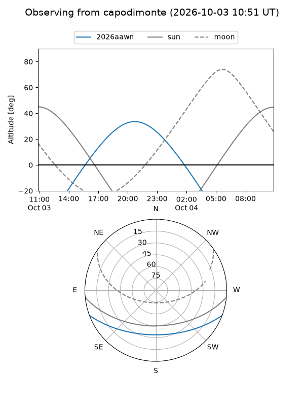
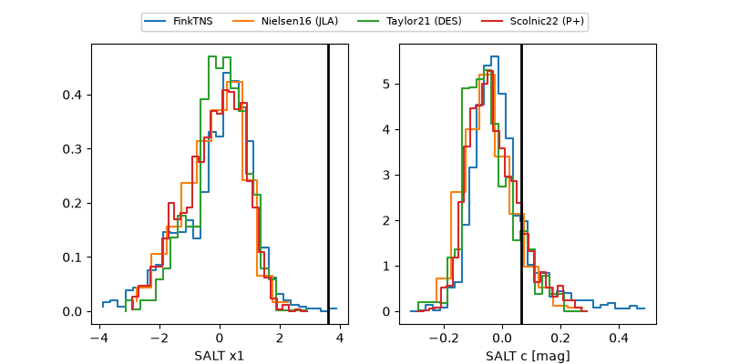

2026aawn
Target 2026aawn at 2026-10-03 06:53
Aliases and brokers:
FINK-ZTF: ztf.fink-portal.org/ZTF26abrfevo
Lasair-ZTF: lasair-ztf.lsst.ac.uk/objects/ZTF26abrfevo
ALeRCE-ZTF: alerce.online/object/ZTF26abrfevo
YSE-PZ: ziggy.ucolick.org/yse/transient_detail/2026aawn
TNS name: wis-tns.org/object/2026aawn
Direct TNS query: direct search
alt names
ZTF26abrfevo (ztf,fink_ztf)
2026aawn (tns,yse)
Coordinates:
equatorial (ra, dec) = 337.2917,-15.68024
equatorial (HMS+DMS) = 22:29:10.02,-15:40:48.87
galactic (l, b) = (44.6905,-55.10863)
Flags:
TNS type: nan
peak dt: +30.2
Photometry:
last ztfg=20.15, ztfr=20.31
2 ztfg, 3 ztfr detections
Lightcurve

Visibility



Additional plots
